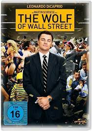

Hi! My name is Melodie Cornelly and I am a Computer Science student at Rockland Community College.
Date of Birth: November 30, 2003
Zodiac Sign: Sagittarius
Favorite color: Earth tones
Education Info
Ramapo High School - High School Diploma
Rockland Community College - Associates in Computer Science
Pace University - Transfering Spring 2024 (Bachelors in Computer Science)
Favorite Movies

These are my absolute favorite movies of all time with The Wolf of Wall Street at number one!
1. Favorite Movie of All Time: The Wolf of Wall Street2. Favorite Romance Movie: Twilight, After3. Favorite Action Movie: Taken, Divergent4. Favorite Comedy Movie: Project X, You People
If you would like to watch The Wolf of Wall Street on your own, just click the picture and it will send you to an amazon link where you can purchase it yourself!
Hobbies
In my free time, I enjoy:
1. Reading: Reading takes me away from the general drama that is my life. There's so much negativity online and in life that being Able to escape with a good book helps A LOT. 2. Writing: I love writing because I have a hard time relaying my thoughts, feelings, and speaking up for myself. Writing things down helps me think clearly. 3. Cooking: Cooking to me is like an art. These days people have Doordash and Uber Eats which makes me feel like we are losing the simplicity of a nice home cooked meal. I also love that I make people happy with my cooking. Im still learning new things day by day but I enjoy it very much. 4. Going to the gym: Fitness is something that I take very seriously. It helps me calm down my nerves and it's a challenge that I enjoy. I prefer to live a healthier lifestyle which also brings me back to my cooking because I don't eat out much.
Favorite Books
On my free time, I love to read books. I think that reading books is a better time filler than being on social media and watching TV. I also love going to Barnes and Noble because of the access to books and school items, as well as the atmosphere.
My favorite books are:
Discipline is Destiny by Ryan Holiday
The Risk by Elle Kennedy
I Will Teach You To Be Rich by Ramit Sethi
The Psychology of Money by Morgan Housel
If you want to gain more info on my favorite BOOKS, click the word "BOOKS" and it will bring you to my website.
Favorite Web Sites
These are my favorite websites. They give me all the information I am interested in. I can spend hours on these
websites. If you want to view them yourself, just scroll down below or click the picture and it will send
you to Vogue's website!